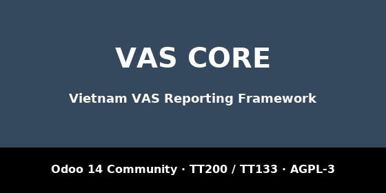

l10n_vn_vas_reports; it adds no menu of its own.vn.ledger.provider: a custom module can swap
any engine or repository per database with one _inherit.eval.Part of the Vietnam VAS Reports suite for Odoo 14
Community: accounting books and financial statements
(l10n_vn_vas_reports), inventory
(l10n_vn_stock_reports), manufacturing
(l10n_vn_mrp_reports) and fixed assets
(l10n_vn_asset_reports) on the shared framework
vn_core. Free and open source, AGPL-3.